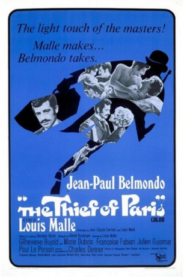

#6494 Der Dieb von Paris
Alternativ: The Thief of Paris (Englischer Titel)
 
 IMDB-Wertung: 6.9 / 10
IMDB-Wertung: 6.9 / 10  Metascore: 0
Metascore: 0 
In Paris around 1900, Georges Randal is brought up by his wealthy uncle, who steals his inheritance. Georges hopes to marry his cousin Charlotte, but his uncle arranges for her to marry a rich neighbour. As an act of revenge, Georges steals the fiance's family jewels, and enjoys the experience so much that he embarks upon a life-time of burglary.
Jahr: 1967
Dauer: 121 Minuten
FSK:
Land: Frankreich Studio: Arthaus FilmverleihTonspuren:
Untertitel: Deutsch,
Auflösung: 1080p (1792x1080) Größe: 7823 MB
Genre: Drama, Komödie, Krimi
Regisseur: Louis Malle
Drehbuch: Georges Darien
Soundtrack:
Darsteller:
 Jean-Paul Belmondo als Georges Randal
Jean-Paul Belmondo als Georges Randal Geneviève Bujold als Charlotte
Geneviève Bujold als Charlotte- Marie Dubois als Geneviève Delpiels
 Julien Guiomar als L'abbé Félix La Margelle
Julien Guiomar als L'abbé Félix La Margelle- Françoise Fabian als Ida
- Marlène Jobert als Broussaille
- Bernadette Lafont als Marguerite - la bonne délurée
- Charles Denner als Jean-François Cannonier
- Anne Vernon als Mme Voisin , scenes deleted
- Louis Malle als Un figurant , uncredited
- Pierre Étaix als Le pickpocket , uncredited
- Paul Le Person als Roger Voisin dit Roger-La-Honte
- Christian Lude als Urbain Randal - l'oncle et tuteur de Georges
- Martine Sarcey als Renée Mouratet
- Roger Crouzet als Mouratet
- Jacques Debary als Courbassol
- Fernand Guiot als Emiel Van Der Busch
- Marc Dudicourt als Georges Antoine
- Paul Vally als MaîtreVivonne - le notaire
- Monique Mélinand als Mme de Montareuil
- Madeleine Damien als Marie-Jeanne
- Jacqueline Staup als Mme Van der Busch
- Nane Germon als Mme Voisin
- Jean Champion als Le patron de l' Hôtel de la Biche
- Jacques Gheusi als Prof. Boileau
- Christian de Tillière als Armand de Montareuil
- Duncan Elliott als Le receleur anglais
- Maurice Auzel als Marcel , uncredited
- Jean-Luc Bideau als L'huissier anglais / Process server , uncredited
- Nicole Chollet als (La patronne du restaurant , uncredited
- Irène Daix als La vieille servante anglaise , uncredited
- Jacques David als L'homme volé , uncredited
- Gabriel Gobin als Le père Visin , uncredited
- Julien Loisel als M. de Montareuil , uncredited
- Dario Meschi als Le patron de l'Hôtel du Roi Salomon , uncredited
- Gaston Meunier als Un invité chez Mouratet , uncredited
- Odette Piquet als Fernande - la patronne de l'Hôtel de la Biche , uncredited
- Gilbert Servien als Le complice du pickpocket , uncredited
Datei: X:\1967\Dieb von Paris, Der (1967, FSK, 1792x1080).mkv seit 28.06.2017
Festplatte: HD 1900-1970
 Es gibt insgesamt 24 Filme in der Gruppe '1967'
Es gibt insgesamt 24 Filme in der Gruppe '1967'